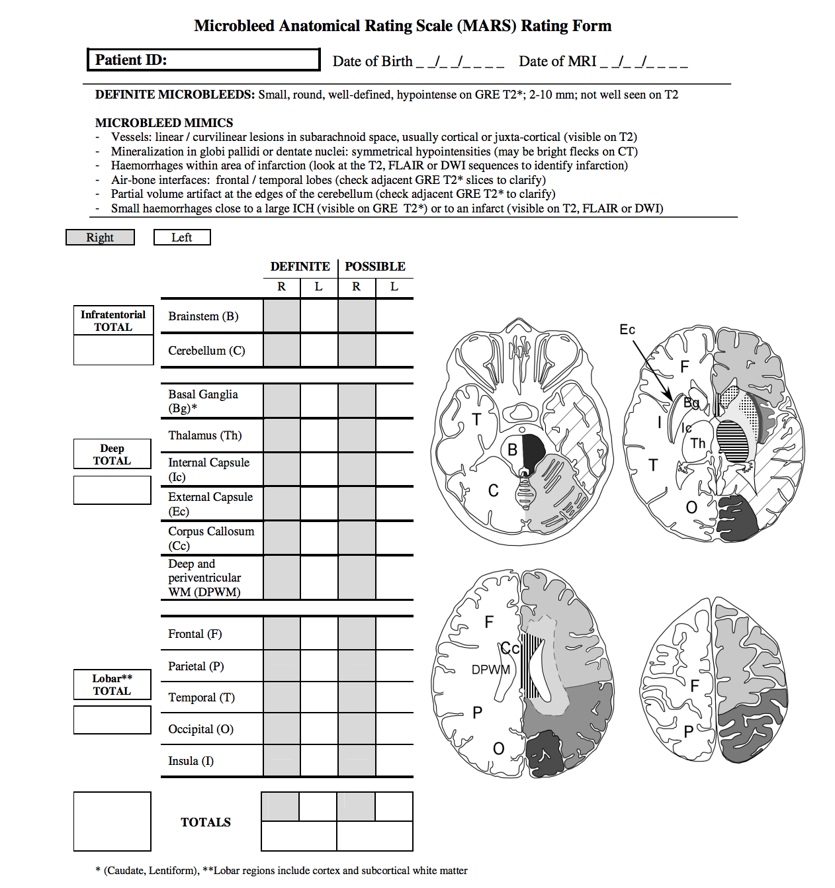

6 Cerebral microbleeds (CMB)
Microbleeds are detected in healthy individuals with growing age and patients with cerebrovascular disease. CMB might be useful biomarkers for pathologic damage to small vessels from hypertension og cerebral amyloid angiopathy (CAA) (Gregoire et al. 2009). Further they have been linked to cognitive impairment (Shams 2016)
For a consistent description of cebral microbleeds Gregoire et al. developed “The Microbleed Anatomical Rating Scale (MARS)” (Gregoire et al. 2009) that is anatomically detailed and worth considering to be included into our study. The MARS-form gives an overview of important microbleed mimics.
BOMBS (Cordonnier et al. 2009) is a different scale that should be taken into consideration. (Not really sure about the differences here!!)

As a simplified version one could use:
| Score | Meaning |
|---|---|
| 0 | No CMB |
| 1 | CMBs detected |
References
Gregoire, S. M., U. J. Chaudhary, M. M. Brown, T. A. Yousry, C. Kallis, H. R. Jager, and D. J. Werring. 2009. “The Microbleed Anatomical Rating Scale (MARS): Reliability of a tool to map brain microbleeds.” Neurology 73 (21): 1759–66. doi:10.1212/WNL.0b013e3181c34a7d.
Shams, Sara. 2016. “Cerebral microbleeds and cognitive impairment.” Inst för klinisk vetenskap, intervention och teknik / Dept of Clinical Science, Intervention; Technology.
Cordonnier, C., G. M. Potter, C. A. Jackson, F. Doubal, S. Keir, C. L.M. Sudlow, J. M. Wardlaw, and R. A.-S. Salman. 2009. “Improving Interrater Agreement About Brain Microbleeds: Development of the Brain Observer MicroBleed Scale (BOMBS).” Stroke 40 (1): 94–99. doi:10.1161/STROKEAHA.108.526996.